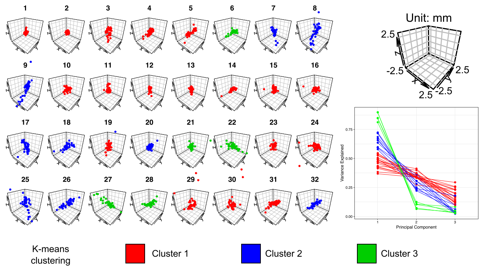

Anatomical Fiducials (AFIDS)
Greydon Gilmore
Neurohackademy 2019
Introduction
- Image alignment is crucial step in many neuroimaging studies
- Within/between study participants/patients
- Subject to template registration
- Fiducials represent anatomical feature by 3D Cartesian coordinate (x,y,z)
- This protocol aims to increase accuracy/reliability of image registration
Anatomical Fiducials (AFIDS)
- The 32 fiducials selected are:
- Identifiable across datasets
- Sampled distributed about the brain
- Fiducials placed on any image you want to register
- Euclidean distances between fiducial points of merged objects provide more sensitive registration accuracy metric
Tutorial session
Today I will walk you through placement of all 32 points on an MNI template
- Open Slicer and import image data
- Brightness and contrast
- Views: axial (red), sagittal (yellow), coronal (green)
- Crosshairs
- Right mouse button: zoom in/out
- Middle mouse button: pan image
K-means clustering point clouds
